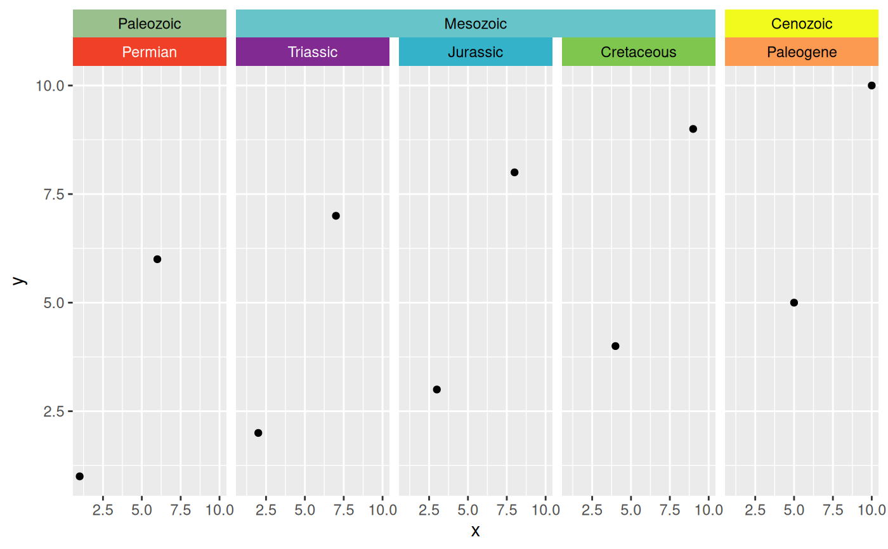

facet_nested_color behaves similarly to ggh4x::facet_nested() in that it
forms a matrix of panels defined by row and column faceting variables and
nests grouped facets. The main difference is that it also allows the user to
specify the background and label colors of the individual facet strips using
the colors and lab_colors arguments.
Usage
facet_nested_color(
rows = NULL,
cols = NULL,
scales = "fixed",
space = "fixed",
axes = "margins",
remove_labels = "none",
independent = "none",
shrink = TRUE,
labeller = "label_value",
colors = stages,
lab_colors = "auto",
as.table = TRUE,
switch = NULL,
drop = TRUE,
margins = FALSE,
nest_line = element_line(inherit.blank = TRUE),
solo_line = FALSE,
resect = unit(0, "mm"),
render_empty = TRUE,
strip = strip_nested(),
bleed = NULL
)Arguments
- rows, cols
A set of variables or expressions quoted by
vars()and defining faceting groups on the rows or columns dimension. The variables can be named (the names are passed tolabeller).For compatibility with the classic interface,
rowscan also be a formula with the rows (of the tabular display) on the LHS and the columns (of the tabular display) on the RHS; the dot in the formula is used to indicate there should be no faceting on this dimension (either row or column).- scales
A
character(1)orlogical(1)whether scales are shared across facets or allowed to vary. Interacts with theindependentargument. One of the following:"fixed"orFALSEScales are shared across all facets (default).
"free_x"x-scales are allowed to vary across rows.
"free_y"y-scales are allowed to vary across columns.
"free"orTRUEScales can vary across rows and columns.
- space
A
character(1)orlogical(1)determining whether the size of panels are proportional to the length of the scales. When theindependentargument allows for free scales in a dimension, the panel sizes cannot be proportional. Note that thescalesargument must be free in the same dimension as thespaceargument to have an effect.One of the following:"fixed"orFALSEAll panels have the same size (default).
"free_x"Panel widths are proportional to the x-scales.
"free_y"Panel heights are proportional to the y-scales.
"free"orTRUEBoth the widths and heights vary according to scales.
- axes
A
character(1)orlogical(1)where axes should be drawn. One of the following:"margins"orFALSEOnly draw axes at the outer margins (default).
"x"Draw axes at the outer margins and all inner x-axes too.
"y"Draw axes at the outer margins and all inner y-axes too.
"all"orTRUEDraw the axes for every panel.
- remove_labels
A
character(1)orlogical(1)determining whether axis text is displayed at inner panels. One of the following:"none"orFALSEDisplay axis text at all axes (default).
"x"Display axis text at outer margins and all inner y-axes.
"y"Display axis text at outer margins and all inner x-axes.
"all"orTRUEOnly display axis text at the outer margins.
- independent
A
character(1)orlogical(1)determining whether scales can vary within a row or column of panels, like they can be in ggplot2::facet_wrap. Thescalesargument must be free for the same dimension before they can be set to independent. One of the following:"none"orFALSEAll y-scales should be fixed in a row and all x-scales are fixed in a column (default).
"x"x-scales are allowed to vary within a column.
"y"y-scales are allowed to vary within a row.
"all"orTRUEBoth x- and y-scales are allowed to vary within a column or row respectively.
- shrink
If
TRUE, will shrink scales to fit output of statistics, not raw data. IfFALSE, will be range of raw data before statistical summary.- labeller
A function that takes one data frame of labels and returns a list or data frame of character vectors. Each input column corresponds to one factor. Thus there will be more than one with
vars(cyl, am). Each output column gets displayed as one separate line in the strip label. This function should inherit from the "labeller" S3 class for compatibility withlabeller(). You can use different labeling functions for different kind of labels, for example uselabel_parsed()for formatting facet labels.label_value()is used by default, check it for more details and pointers to other options.- colors
Specifies which colors to use to replace the strip backgrounds. Either A) a function that returns a color for a given strip label, B) the character name of a function that does the same, C) a named character vector with names matching strip labels and values indicating the desired colors, or D) a data.frame representing a lookup table with columns named "name" (matching strip labels) and "color" (indicating desired colors). If the function returns
NA, the default background color will be used.- lab_colors
Specifies which colors to use for the strip labels. Either A) a function that returns a color for a given strip label, B) the character name of a function that does the same, C) a named character vector with names matching strip labels and values indicating the desired colors, D) a data.frame representing a lookup table with columns named "name" (matching strip labels) and "lab_color" (indicating desired colors), or E) "auto" (the default), which set the labels to black or white, whichever has better contrast with the background color, based on recommendations by the International Telecommunication Union. If the function returns
NA, the default label color will be used.- as.table
If
TRUE, the default, the facets are laid out like a table with highest values at the bottom-right. IfFALSE, the facets are laid out like a plot with the highest value at the top-right.- switch
By default, the labels are displayed on the top and right of the plot. If
"x", the top labels will be displayed to the bottom. If"y", the right-hand side labels will be displayed to the left. Can also be set to"both".- drop
If
TRUE, the default, all factor levels not used in the data will automatically be dropped. IfFALSE, all factor levels will be shown, regardless of whether or not they appear in the data.- margins
Either a logical value or a character vector. Margins are additional facets which contain all the data for each of the possible values of the faceting variables. If
FALSE, no additional facets are included (the default). IfTRUE, margins are included for all faceting variables. If specified as a character vector, it is the names of variables for which margins are to be created.- nest_line
a theme element, either
element_blank()or inheriting fromggplot2::element_line(). Lines are drawn between layers of strips indicating hierarchy. The element inherits from theggh4x.facet.nestlineelement in the theme.- solo_line
A
logical(1)indicating whether parent strips with a single child should be drawn with anest_line(TRUE) or the line only applies to parents with multiple children (FALSE, default). Only relevant whennest_lineis drawn.- resect
a
unitvector of length 1, indicating how much the nesting line should be shortened.- render_empty
A
logical(1): whether to draw panels without any data (TRUE, default) or display these as blanks (FALSE).- strip
An object created by a call to a strip function, such as
strip_nested().- bleed
![[Deprecated]](figures/lifecycle-deprecated.svg) the
the bleedargument has moved to thestrip_nested()function.
Details
This function inherits the capabilities of
facet_grid2().
Unlike facet_grid(), this function only automatically expands
missing variables when they have no variables in that direction, to allow
for unnested variables. It still requires at least one layer to have all
faceting variables.
Hierarchies are inferred from the order of variables supplied to
rows or cols. The first variable is interpreted to be the
outermost variable, while the last variable is interpreted to be the
innermost variable. They display order is always such that the outermost
variable is placed the furthest away from the panels. For more information
about the nesting of strips, please visit the documentation of
strip_nested().
See also
Other faceting functions:
facet_grid_color(),
facet_nested_wrap_color(),
facet_wrap_color()
Examples
library(ggplot2)
df <- data.frame(x = 1:10, y = 1:10,
period = factor(c("Permian", "Triassic", "Jurassic",
"Cretaceous", "Paleogene"),
levels = c("Permian", "Triassic",
"Jurassic", "Cretaceous",
"Paleogene")),
era = factor(c("Paleozoic", "Mesozoic", "Mesozoic",
"Mesozoic", "Cenozoic"),
levels = c("Paleozoic", "Mesozoic",
"Cenozoic")))
ggplot(df, aes(x, y)) +
geom_point() +
facet_nested_color(~ era + period, colors = rbind(periods, eras))
